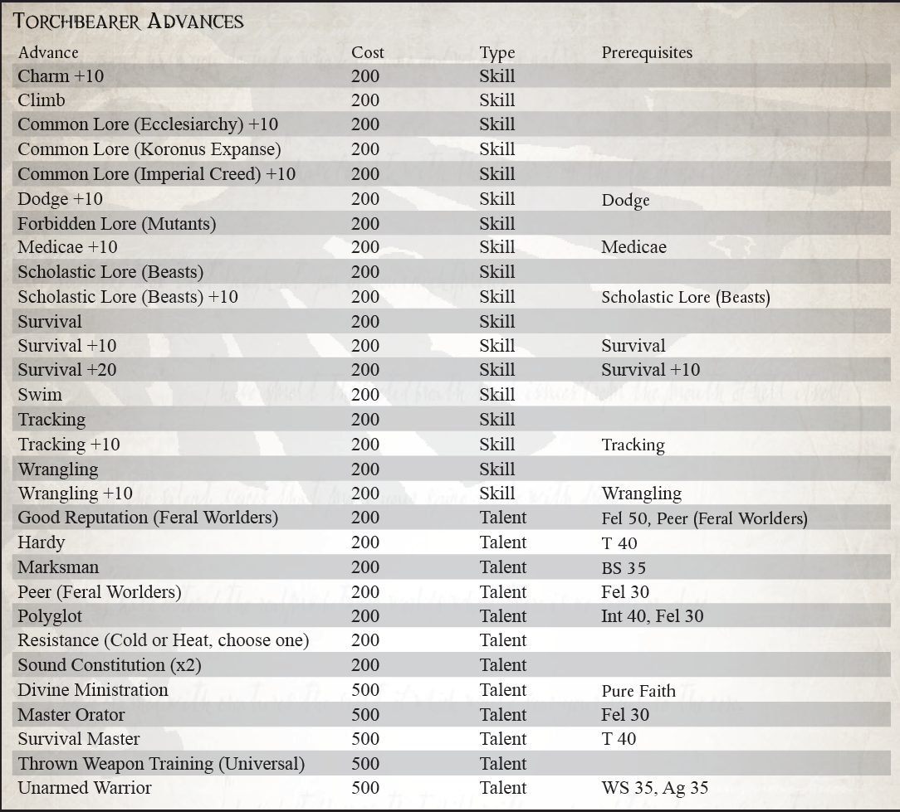

“如火温暖你的身体，知道皇帝的正义会温暖你的灵魂。由于这种大火将动物拒之门外，所以
帝皇之怒将抵挡那些掠夺你的难以言喻的恐惧。当这火光照亮黑夜时，帝皇的光辉将带你走出黑暗，进入人类神圣帝国的怀抱”
——Lindesfarre Schaeln，红色荒原失落部落的火炬手
在广域开展活动的传教士与在卡利西斯文明空间服务于皇帝旨意的人不同，因为他们遇到了为该地区服务的同胞们做梦也想不到的恐怖和奇迹。在这些无法无天的系统中从一个世界到另一个世界旅行并将神圣信条带给那些失去帝皇之光的人是传教士的神圣职责。然而，在浩瀚无垠的一些最崎岖和最危险的世界中，有着早于帝国的原始人类文化。这些异教世界从未听说过神皇或人类帝国，并且很可能会猛烈抵制部长的话。在这些情况下，一个典型的传教士几乎没有机会改变民众，而传教士依赖传教士的才能，这些传教士被非正式地称为火炬手。
火炬手被派往远离帝皇之光的人类文化中，他们可能崇拜黑暗和野蛮的神。在这些由野蛮游牧民族统治、原始武器是发展的高度的世界上，需要身体的力量和愿意花费数年或数十年的时间来努力将居民的灵魂从阴影中拯救出来。很少有人有毅力在这样的环境中生存，更不用说履行他们神圣的职责了；成为火炬手就是高举帝国之火，照亮道路，而神皇的精神在内心燃烧，支撑着传教士的艰辛。虽然所有穿越广域的传教士都需要长时间独立行动，但火炬手可能会发现自己被安置在一个荒凉无情的世界上，多年没有联系，由于严重的亚空间风暴而搁浅，或者可能只是被遗忘了几十年一次。因此，他们是生存专家，并有望忍受自然和人类的掠夺。当他们到达一个新世界时，他们可能只知道路过的探险家的零碎报告，这些报告提到了遇到的无利可图的当地人，其他什么也没有。其他行星可能只提供一个 Ministorum 灯塔，旨在吸引他们的注意力，由古老的 Missionaria Galaxia 探测器留下。因此，火炬手们学会了携带各种基本装备轻装上阵，建造和创造他们需要的任何其他东西——因为他们的技能很棒，而他们的需求很少。在很短的时间内，他们可以建立永久的使命，新信徒可以在那里学会正确地崇拜他们的神皇。
考虑到亚空间旅行的变幻莫测，火炬手们进入他们的新世界时知道他们可能永远无法恢复。许多人在出发时向他们的船友和战友道别，因为他们可能要过几年才能团聚。然而，他们的精神本质就是如此，以至于他们对与文明舒适的长期隔离感到很自在，并在他们幸福的努力中找到了新的能量。他们的存在很简单，对那些希望免于渗透在 Ministorum 等级制度中的微妙而恶毒的政治的人具有吸引力。然而，即使是这些传教士中最虔诚、最敬业的传教士，诱惑也能压倒，就像 Karthom Laui 的情况一样。他深深扎根于破碎的世界，又过了 45 年才被人看到，直到他的家乡金金归来，登陆队遭到伏击，因为他们的飞船被成群的狂热分子蹂躏
当地人现在由他们的全神父卡托姆（Karthom the Beneficent）领导。他的思想被长期的孤立扭曲了，他将《帝国信条》改写为对自己的颂扬，成为了野蛮部落的神。 Laui 在随后的一系列袭击中被推定死亡，但关于他的疯狂愿景的谣言仍然存在，他的追随者有时仍会在其他未开发的星球上遇到。
尽管教会努力压制这种异端传说，但这种恶名仍然存在。最好听听西风之火 Trell Palnus 的传奇故事。他将自己的一生献给了一个被遗弃的世界，花了很长的时间从一个定居点走到另一个定居点，并通过圣言或圣火使他发现的人皈依。这就是他的存在，以至于很少有人需要被后者奉献。在短短三代人的时间里，这颗星球从一块毫无价值的岩石变成了广袤无垠的燃烧之光，一个有利可图的神殿世界，也是许多最虔诚的教廷臣民的家园。只要有这样的例子让灵魂燃烧起来，克洛诺斯肯定可以从弥漫在浩瀚宇宙中的黑暗中拯救出来。
很少有人选择火炬手的道路，因为这是一种连最基本的物质享受都没有的艰苦生活。 这也意味着与部长本身隔离，可能导致晋升和认可的机会减少。 这条路更适合那些寻求精神奖励的人，或者可能是为某些隐藏的失败寻求忏悔。 一位成功的火炬手将在浩瀚宇宙中建立一个感恩的奉献者网络，随时准备帮助他和他的同胞。 这是一颗罕见的死水星球，不会记得将帝皇之火带到他们世界的那个人，他的名字将与他们一起穿越星辰。 无论他们走到哪里，他都会有朋友在等他。
所需职业：传教士
替代等级：等级 2 或更高 (7,000 xp)
其他要求：你必须拥有至少 35 的韧性和至少 35 的意志力，并且至少获得了一项健全的体质天赋。
生存大师（天赋）
先决条件：坚韧 (40)
火炬手能够在最荒凉和荒凉的地区茁壮成长，这使他能够在其他人会倒下的地方继续他的神圣使命。 无论是一望无际的沙漠沙丘、纠缠动物的热带雨林、荒芜的山脉，甚至是可怕的死亡世界，他都能坚持下来。 角色可以重投所有失败的生存、追踪和争吵技能测试，但每次检定只能重投一次。
